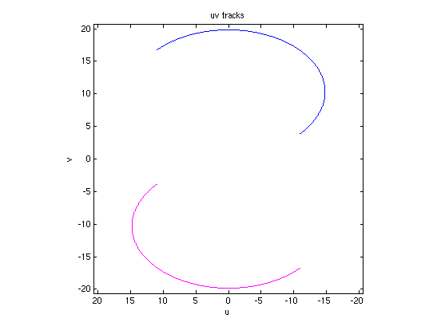
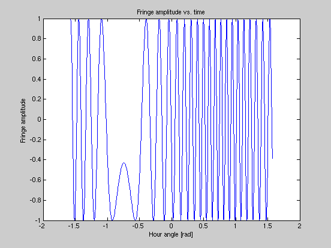

Make uv track for an antenna pair (single baseline)
AH 2010.3.15
Contents
Inputs
d = 20; % baseline length in wavelengths az = -30; % baseline azimuth angle in deg. el = 0; % baseline elevation angle in deg. lat = 39; % observatory latitude in deg. dec = 40; % source declination in deg %dec = 58.5; % declination of CasA in deg. %dec = 40.6; % declination of CygA in deg. nstep = 801; % number of steps along track h = linspace(-6, 6, nstep)*pi/12; % hour angle range of +/- 6 hours
Set up for calculation
% results matrix contining u, v, w columns UVW = zeros(nstep, 3); % convert angles to radians az = d2r(az); el = d2r(el); lat = d2r(lat); dec = d2r(dec);
Calculation
% compute points along track and store as u, v, w columns in array UVW for i = 1:nstep UVW(i,:) = (xyz2uvw(h(i), dec) * baseline2xyz(d, az, el, lat))'; end
Plots
% uv-plane tracks mx = max(max(UVW(:, 1:2))); figure(1) clf() set(axes,'XDir','reverse') hold on plot(UVW(:,1), UVW(:,2)) plot(-UVW(:,1), -UVW(:,2), 'm') axis([-mx, mx, -mx, mx]*1.04) axis square box xlabel('u') ylabel('v') title('uv tracks') hold off % fringe figure(2) clf() plot(h, cos(2*pi*UVW(:,3))) xlabel('Hour angle [rad]') ylabel('Fringe amplitude') title('Fringe amplitude vs. time') 